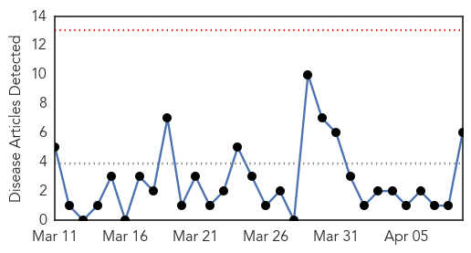

Meningitis
30-Day Web Trend
0 alerts, 0 warnings

30-Day Twitter Trend
0 alerts, 0 warnings

Article Locations

Article Confidences

Top Articles:
- 0.952
- Scarlet fever: acute management and infection control
- 0.932
- Viral meningitis reported in Midway ISD school
- 0.927
- John Tyler Community College student contracts meningitis
- 0.710
- Methuen officials want 170 tested for TB
- 0.678
- Cross family from Braunton welcomes life-saving meningitis vaccine
- 0.538
- How safe is your food?
Top Tweets:
-
No tweets found for Apr 09, 2015
Measles
30-Day Web Trend
0 alerts, 0 warnings

30-Day Twitter Trend
1 alerts, 0 warnings

Article Locations

Article Confidences
Top Articles:
- 0.882
- Europe travelers told to take measles precautions
- 0.874
- Health sector and humanitarian community hold measles outbreak response meeting - Sudan
- 0.861
- Passengers aboard second China-to-Vancouver flight warned about measles
- 0.842
- Passengers exposed to measles on flight from China to Vancouver
- 0.738
- Public Health Agency of Canada issues statement on measles
- 0.616
- Vancouver, Quebec measles update
- 0.615
- Measles on second Air China flight in April linked to first flight in March
- 0.589
- Immunizations Unknown: Pa. School Vaccine System Flawed
Top Tweets:
-
No tweets found for Apr 09, 2015